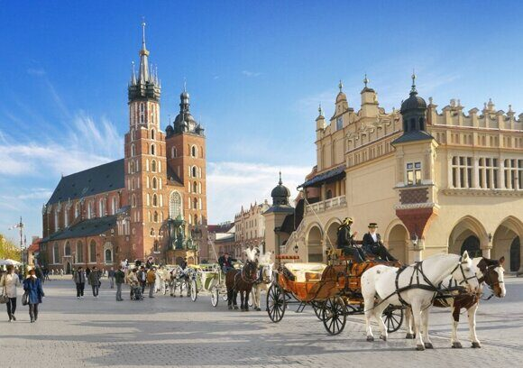

« НазадНовые условия для въезда россиян в Польшу в 2025 С сентября 2022 года граждане России не допускаются к въезду в Польшу через внешнюю границу Шенгенской зоны, если цель поездки носит туристический, экономический, спортивный или культурный характер. При этом лица, имеющие уважительные основания – например, приглашение на работу, документы о зачислении в учебное заведение, разрешение на работу, гуманитарные визы или карту поляка, а также граждане стран ЕС, Исландии, Лихтенштейна, Норвегии и Швейцарии – могут пересекать границу. Решения чиновников на границе принимаются индивидуально, поэтому даже при наличии документов возможны вопросы и проверки. Если у вас отсутствуют специальные основания, попасть в Польшу напрямую из России не получится. В такой ситуации оптимальным решением может стать маршрут через другую страну Шенгена. Например, вы можете забронировать билет до Франции или Италии, а затем пересечь границу уже внутри шенгенской зоны. Для поездки через другую страну вам понадобится заграничный паспорт с шенгенской визой, срок действия которой должен быть не менее трех месяцев после планируемой даты возвращения. Возможные пути въездаСуществуют два основных подхода к организации поездки: А. Прямой въезд через внешнюю границуЕсли у вас имеются специальные основания – приглашение на работу, учебное приглашение, разрешение на работу или документы, подтверждающие наличие карты поляка – вы можете попытаться пересечь границу непосредственно, даже если вы находитесь в России. Процесс оформления таких документов требует времени и определенной подготовки. Вам нужно будет доказать при наличии оснований, что цель вашей поездки веская и оправданная интересами польской стороны. Б. Въезд через страну Шенгенской зоныКак вариант, если вы не можете предоставить документы, подтверждающие ваше право на прямой въезд, можно рассмотреть возможность пересечения границы через одну из стран Шенгенской зоны. Для этого необходимо заранее оформить шенгенскую визу, приобрести билет до выбранной страны и затем организовать перелет или поездку в Польшу. Такой маршрут обходит прямые ограничения, действующие на внешней границе. Категории лиц, допускаемых к прямому въездуЕсли вы планируете въезд непосредственно с российской территории, следует учесть, что допускаются следующие категории граждан:
Пограничники могут запросить дополнительные подтверждающие документы, поэтому перед поездкой необходимо проконсультироваться с консульством и собрать как можно больше информации о действующих правилах. Документы – основа успешного пересечения границыДля того чтобы въезд в Польшу прошел без сложностей, необходимо внимательно подготовить весь пакет документов. Вот основные требования: а) Заграничный паспорт В первую очередь, заграничный паспорт должен быть действующим, а шенгенская виза – оформленной со сроком действия не менее трех месяцев после возвращения. Проверьте, чтобы все страницы паспорта не были заполнены старыми отметками или визами, которые могут вызвать вопросы у пограничников. б) Медицинская страховка Для получения шенгенской визы и допуска к пересечению границы потребуется медицинская страховка, которая охватывает все страны шенгенской зоны. Минимальное страховое покрытие должно составлять 30 000 евро. При выборе страховки обязательно обратите внимание, что она должна действовать на протяжении всего времени вашего пребывания за границей. в) Подтверждение финансовой состоятельности и обратного билета Нередко сотрудники пограничного контроля могут запросить доказательства наличия достаточных средств для пребывания в стране. Это может быть выписка из банка, бронь отеля или обратный билет. Минимальные требования могут варьироваться – для коротких поездок потребуется иметь на руках около 300 злотых, а для длительного пребывания – расчет стоимости проживания за каждый день. г) Документы, подтверждающие цель поездки Если вы едете по рабочему или учебному приглашению, обязательно возьмите с собой оригиналы договоров, приглашений, справок о зачислении или трудовых контрактов. Если цель поездки связана с транзитом, удостоверьтесь, что у вас есть доказательства дальнейшего путешествия, например, билеты или бронирование. Оформление визы – варианты и особенностиВ 2025 году получение туристической шенгенской визы для граждан России сталкивается со сложностями. В польских консульствах в Москве, Санкт-Петербурге, Иркутске и Калининграде туристические визы не выдаются. Если вашей целью является свободное посещение страны без подтвержденного дела, придется искать альтернативы. Гуманитарные визы Данная категория виз выдается гражданам, имеющим веские основания для въезда, такие как семейные обстоятельства, участие в культурных или образовательных проектах, а также наличие польских родственников. Если вы можете доказать, что ваше посещение Польши необходимо в силу гуманитарных причин, это может стать вашим ключом к получению визы. Визы для работы или учебы Если ваша поездка связана с получением обучения или работой, подаваясь в консульство, обязательно представьте все документы, подтверждающие ваше намерение работать или учиться непосредственно в Польше. Это значительно увеличит шансы на одобрение визового заявления. Альтернативные способы получения визы Если вы проживаете за рубежом или в одной из стран, где польские консульства продолжают работать с визовыми заявлениями, например, в Армении, Грузии или Узбекистане, можно рассмотреть подачу заявления там. При этом важно заранее удостовериться в правовом статусе своего пребывания в данной стране (наличие ВНЖ или другого документа, подтверждающего легальное проживание). Тонкости транзита через ПольшуЕсли вы планируете пересечь Польшу для дальнейшего путешествия в другую страну, стоит учитывать особенности транзита: Транзит между странами Шенгенской зоны Когда вы перемещаетесь из одной страны шенгенской зоны в другую, требования пограничного контроля несколько облегчаются. Наличие действующей шенгенской визы является достаточным основанием для пересечения границы без дополнительных вопросов. Это правило позволяет, имея визу, прилететь в одну страну – например, Францию – и затем, уже находясь в шенгенской зоне, совершить перелет или наземный переезд в Польшу. Перелет из страны, не входящей в Шенген Если ваш рейс начинается из страны, не входящей в шенген, но конечным пунктом планируется другая шенгенская страна, следует быть готовым к проверке документов, подтверждающих ваше право на пребывание. В таких случаях часто требуется единый билет на весь маршрут, чтобы избежать выхода за пределы транзитной зоны аэропорта. Опыт путешественников Отзывы тех, кто уже пробовал организовать транзит через Польшу, могут стать полезным источником информации. В тематических чатах и на форумах люди делятся своим опытом — какие трансферы оказались удачными, а какие маршруты вызвали дополнительные трудности. Рекомендуется внимательно изучить подобные материалы, чтобы избежать неожиданностей в аэропортах и на границах. Наземный транспорт и особенности пересечения сухопутной границыДля тех, кто предпочитает передвигаться по суше или желает рассмотреть альтернативный маршрут, существует возможность пересечения границы через Калининградскую область. Здесь важны следующие моменты: Ограниченное количество пограничных пунктов Сухопутные переходы между Россией и Польшей находятся в основном в Калининградской области. На данный момент ключевые пропускные пункты – «Багратионовск – Безледы» и «Мамоново – Гжехотки». Учтите, что такие переходы работают только для лиц, имеющих веские основания для въезда. Автобусный транспорт Помимо личного автотранспорта, существуют автобусные линии, соединяющие Калининград с Польшей. Если вы выбираете данный способ, помните, что билет может стоить порядка 4000 рублей, а на трансфере могут потребоваться дополнительные документы, подтверждающие цель поездки. Автомобили, зарегистрированные в России На территории Польши запрещен въезд автомобилей, имеющих российскую регистрацию. Это означает, что если вы планируете пересечь границу на автомобиле, необходимо проверить правовые аспекты и рассмотреть возможность оформления временных номеров или использования автомобиля, зарегистрированного в другой стране. Финансовые вопросы и использование банковских картЕще одним важным аспектом является ситуация с банковскими картами и валютными операциями. С учетом введенных санкций, карты, выпущенные российскими банками (Visa, MasterCard, American Express, JCB), не работают в Польше. Поэтому рекомендуется обратить внимание на следующие варианты: Использование карт, выпущенных в других странах Если у вас есть карта, выданная в Казахстане, Узбекистане или другом государстве, возможность совершать транзакции за рубежом может быть открыта. Уточните информацию у банка относительно условий работы карты за границей. Альтернативные методы оплаты Если альтернативной банковской карты нет, разумным решением является использование наличных – евро или долларов. Обмен валюты в пунктах обмена в Польше позволит вам получить польские злотые по официальному курсу. Напомним, что курс приблизительно равен 1 злотому к 21 рублю, и на период пребывания обычно требуется минимум 300 злотых для краткосрочных поездок. Онлайн-платежи и мобильные приложения Некоторые платежные системы и мобильные приложения, такие как Huawei Pay или сервисы, поддерживающие UnionPay, могут работать даже в условиях санкций. Примеры успешных операций с картами региональных банков можно найти на специализированных форумах, где пользователи делятся опытом оплаты заказов в кафе или аренды услуг. Поиск актуальной информации и консультацииПоскольку ситуация с въездом в Польшу может меняться, крайне важно регулярно проверять обновления в официальных источниках. Сайты министерств иностранных дел, посольств и консульств Польши помогут вам оставаться в курсе изменений. Если у вас есть конкретные вопросы или особенности, связанные с вашим статусом, рекомендуется напрямую обращаться в консульство или подавать запрос по электронной почте (например, в московское посольство по адресу moskwa.visainfo@msz.gov.pl). Консультации специалистов, которые давно работают в сфере паспортно-визовых услуг, могут значительно упростить процесс подготовки документов. Они помогут собрать все необходимые справки и указать на нюансы, которые могли бы стать препятствием на пути к успешному прохождению контроля. Практические рекомендации для подготовки поездкиПеред тем как начинать сбор документов и бронировать билеты, рекомендуется продумать каждый этап пути:
Альтернативные маршруты и личный опыт путешественниковНа форумах путешественников можно встретить сообщения от тех, кто уже пробовал организовать поездку в Польшу в условиях новых ограничений. Некоторые выбирали маршрут через Италию, другие – через Францию. Главное, что они все отмечают – тщательное планирование и проверка актуальных правил перед поездкой. Личный опыт людей, проходивших процедуру получения визы или пересечения границы, может оказаться полезным. Здесь часто обсуждают нюансы работы пограничных служб и дают советы, что именно следует предъявлять в случае возникновения вопросов. Регулярный обмен информацией на тематических ресурсах помогает адаптироваться к изменениям законодательства. Роль специализированных агентств и консалтинговых компанийЕсли вы чувствуете, что самостоятельно разобраться во всех сложностях процесса сложно или время поджимает, можно обратиться в агентства, специализирующиеся на оформлении виз и загранпаспортов. Такие компании имеют опыт работы с различными случаями и могут составить индивидуальную стратегию подготовки документов. Примеры успешного оформления документов и положительный опыт клиентов подтверждают, что профессиональная помощь снижает стресс и уменьшает вероятность отказа при прохождении пограничного контроля. Агентства помогут с оформлением документов, консультациями и даже могут предоставить информацию о текущих изменениях в миграционной политике. Возможные изменения законодательстваВ ближайшие годы правила въезда могут корректироваться в зависимости от политических и дипломатических обстоятельств. Это значит, что важно не полагаться исключительно на устаревшие данные и проверять свежие обновления информации. Регулярное посещение официальных сайтов министерств и посольств позволит вам быть в курсе последних изменений. Открытый диалог с представителями консульских учреждений и участие в профессиональных форумах помогут подготовиться к возможным нововведениям. Даже если новые правила покажутся вам сложными, системный подход и адаптивность позволят найти оптимальный способ для пересечения границы. Советы по подготовке к пограничному контролюПограничный контроль требует от путешественников особого внимания к деталям. Вот несколько рекомендаций, которые помогут успешно пройти проверку:
Итоговые рекомендацииВъезд в Польшу для граждан России в 2025 году требует особой подготовки и внимания ко множеству деталей. Успех вашего путешествия во многом зависит от правильного сбора документов, выбора оптимального маршрута и своевременной подготовки к встрече с пограничными службами. Если у вас есть возможность получить уважительные основания для пересечения внешней границы (например, приглашение на работу или учебу), организуйте процесс с максимальной тщательностью и подготовьте все оригиналы необходимых бумаг. Если же ваш вариант поездки – через другую страну шенгенской зоны, тщательно изучите визовый режим выбранного государства, убедитесь, что у вас оформлена правильная шенгенская виза, и не забывайте проверять актуальные требования к медицинской страховке и финансовым средствам. Также, при планировании маршрута, обратите внимание на особенности транзита: наличие единого билета по маршруту, правила пересадки в аэропортах и возможность быстрого прохождения контроля в страны шенгенской зоны. Для тех, кто предпочитает наземный транспорт, не забудьте ознакомиться с режимом работы пограничных пунктов в Калининградской области и уточнить требования к автомобильным перевозкам. Не забывайте, что безопасность вашего путешествия во многом зависит от своевременной и качественной подготовки. Если возникают сомнения или вопросы, лучше обратиться к специалистам – как в консульствах, так и в специализированных агентствах, занимающихся оформлением документов. Их профессиональный опыт поможет избежать лишних проблем и обеспечит уверенность в успешном пересечении границ. Планирование поездки в условиях современных ограничений – это вызов, который можно преодолеть при наличии подробной информации и системного подхода. Обратите внимание на новые правила, консультируйтесь со специалистами и не полагайтесь только на устаревшие данные. Только комплексный подход и регулярное обновление информации помогут вам успешно организовать поездку в Польшу в 2025 году. ЗаключениеВыбрав оптимальный маршрут и правильно подготовив пакет документов, вы сможете значительно повысить шансы на успешное пересечение границы. Важно помнить, что процесс оформления визы и входа в страну может включать дополнительные проверки и вопросы со стороны пограничных служб, поэтому каждая деталь вашего пакета документов должна быть в порядке. В конечном итоге, готовясь к поездке, вы должны четко понимать, что каждое ваше действие – от выбора маршрута до подготовки копий документов – влияет на итоговый результат. Поэтому рекомендуется начинать подготовку заблаговременно, консультироваться с экспертами и использовать опыт тех, кто уже прошел через этот процесс. Срочное оформление загранпаспорта в Москве – решение за считанные дни!Получите загранпаспорт в самые короткие сроки с помощью центра «Север»! Если вам нужно срочно оформить загранпаспорт в Москве, наши опытные специалисты помогут собрать и оформить все документы быстро и без лишних хлопот. Более 25 лет мы успешно работаем в центре столицы, гарантируя индивидуальный подход и высочайшее качество обслуживания. Мы понимаем, как важно иметь все необходимые документы вовремя, поэтому оперативное оформление загранпаспорта – это наша специализация. Позвоните по номеру +79255854195, и мы поможем вам решить вопрос в кратчайшие сроки, чтобы вы могли без проблем отправиться в долгожданное путешествие или решить другие важные дела! |
Комментарии
Комментариев пока нет